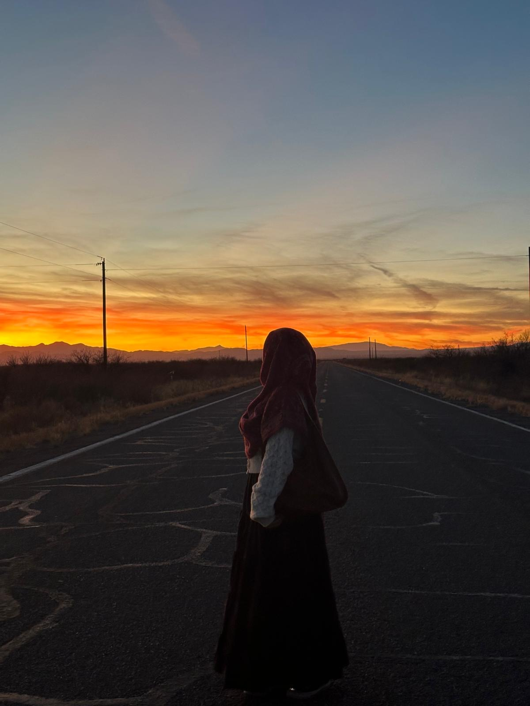
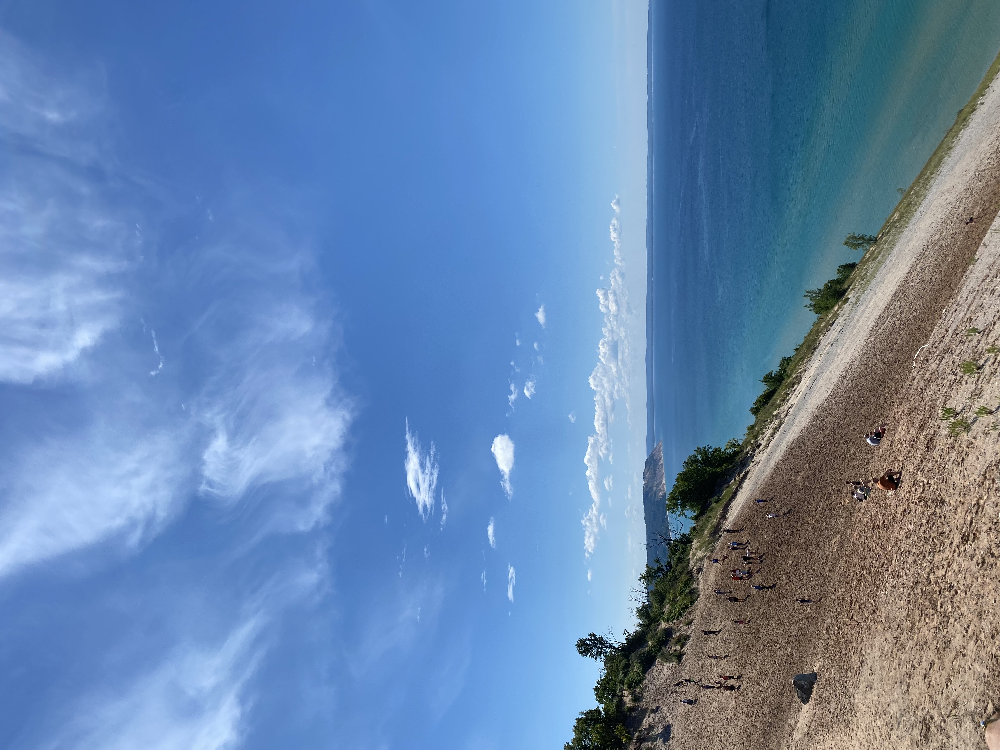
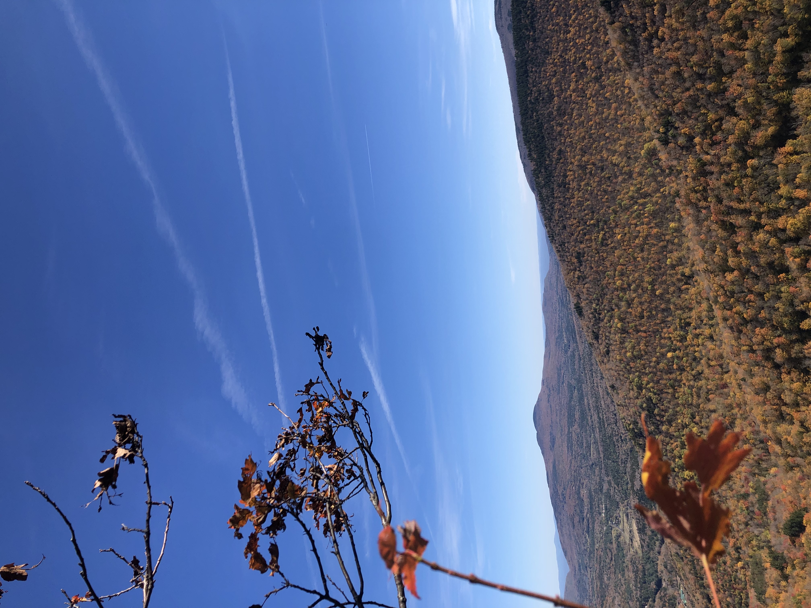
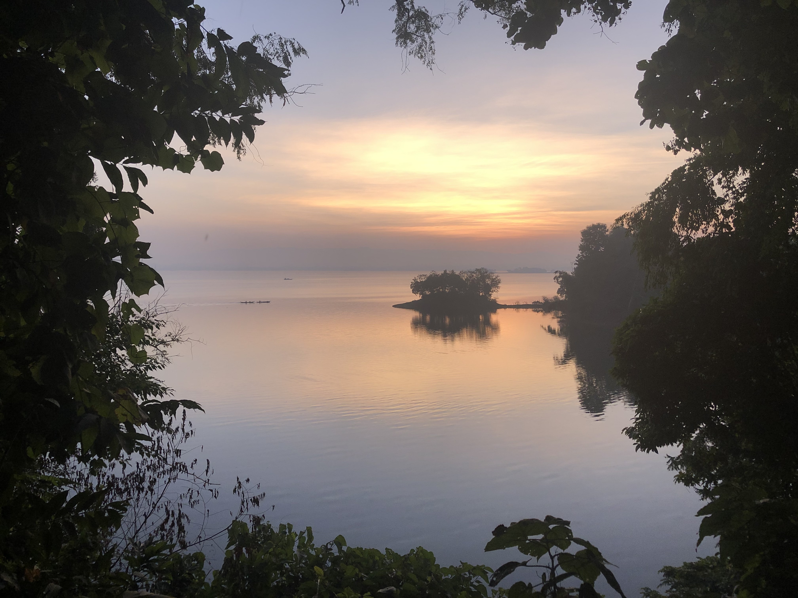
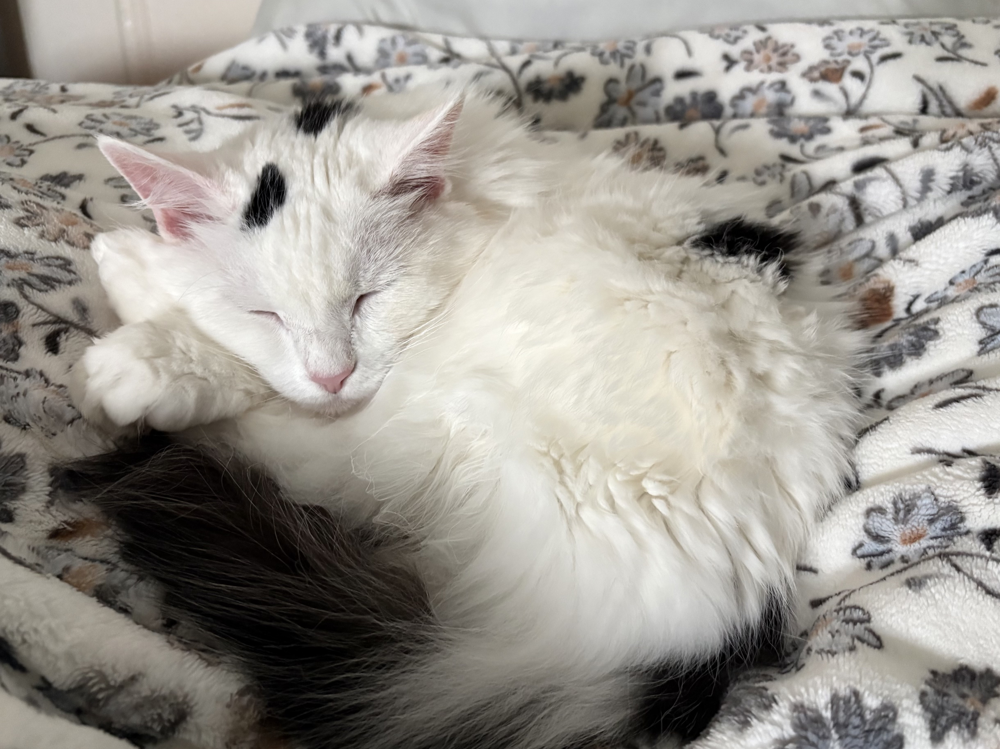
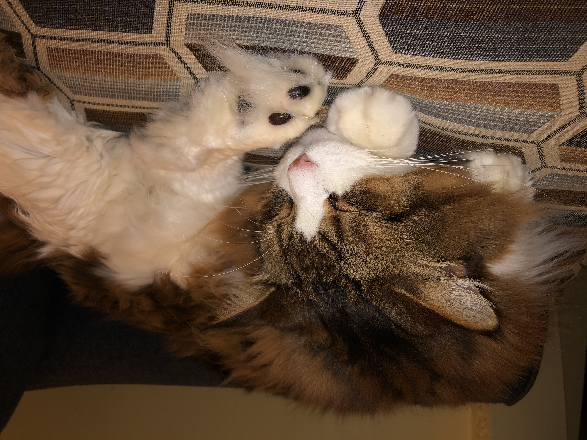

I'm currently a Computer Science student at Queens College with an interest in technology, programming, and data analysis. My experience working in healthcare and teaching has strengthened my communication, organization, and problem-solving skills.
When I'm not coding, I love to travel, read, take photos, and spend time with my cats. I also enjoy watching anime, and my favorite series is Dr. Stone because the main character's resiliance and adaptability is so cool!
Python • Java • HTML • CSS • JavaScript • SQL • AWS




